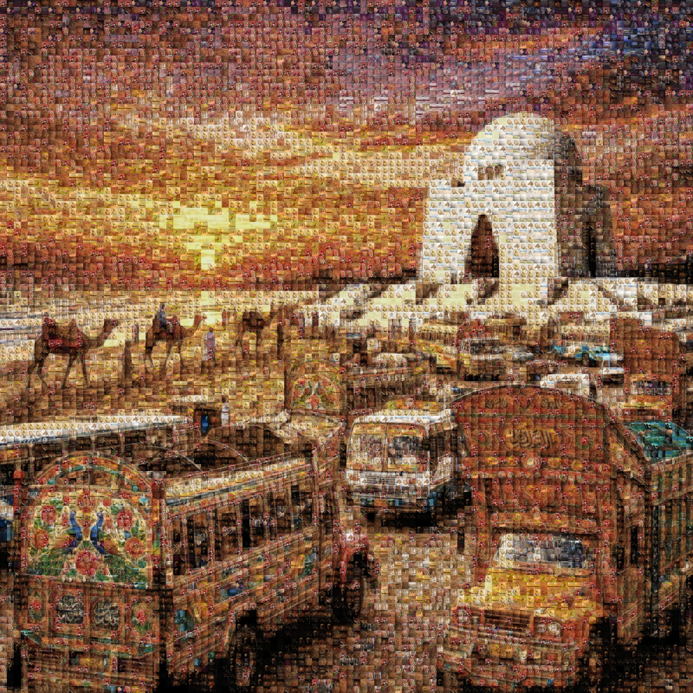
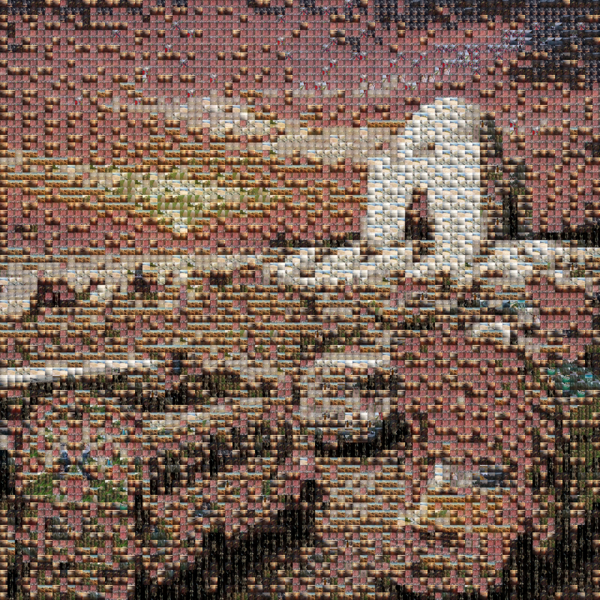

Digital
Mastery.
Transforming thousands of individual pixels into a singular high-fidelity vision. Experience the next generation of AI-driven mosaics.
Explore CollectionMasterpiece Gallery




Infinite Scale.
Scroll to reveal the microscopic precision of 10,000 unique tiles.
Zero Artifacts.
Our AI maintains perfect color fidelity without the need for filters.
The Dynamics of Detail
Kinetic Assembly
Tiles dynamically converge to form the master vision.
Entropy Control
Visualizing the transition from chaos to composition.
Wave Propagation
Fluid transitions based on image frequency and hue.
Recursive Reveal
Mathematical beauty in every tile placement.
Focus Logic
Highlighting individual memories within the grand design.
Real-time Evolution
Observing the algorithm's iterative optimization process.
Technical Documentation
Chromatic Fidelity
How does Aameeq achieve such realistic colors? We use Perceptual LAB color matching, which simulates human vision to find the perfect tile for every pixel.
Global Performance
Our engine is optimized for speed. Whether you are in the US or Europe, generating a high-resolution photo mosaic takes seconds, not hours.
Ready to Build Yours?
Join thousands of creators using the world's most advanced mosaic maker.
Create Your Mosaic Now